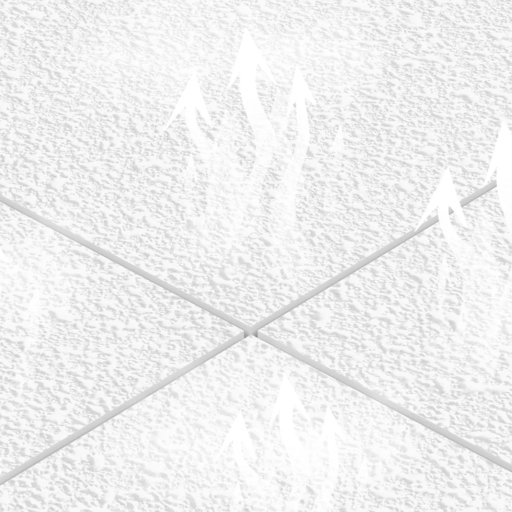
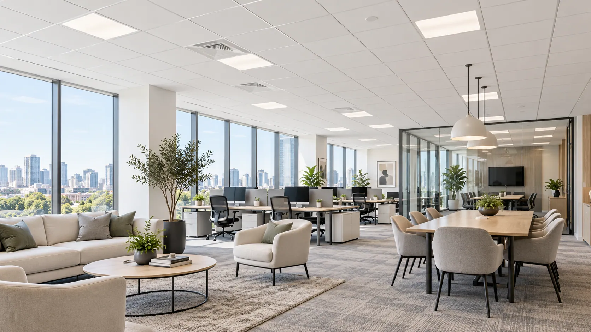
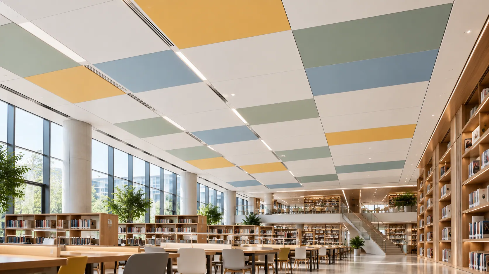
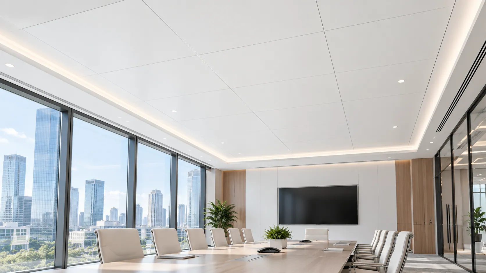
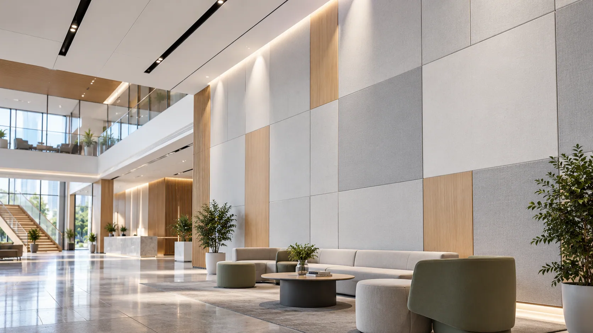
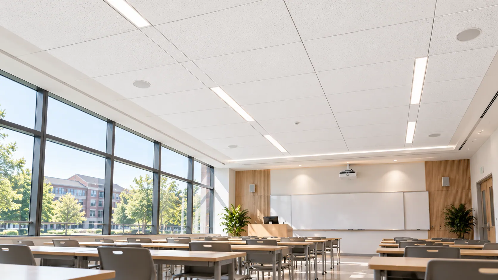
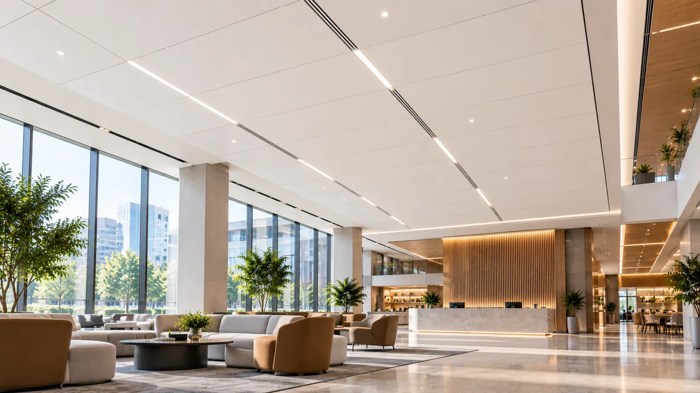

01 — Excessive Airflow Resistance
A dense or heavily coated facing may restrict airflow through the surface, changing how sound energy reaches the porous acoustic core.
01 — HERO BANNER
Eyebrow: HIGH-PERMEABILITY ACOUSTIC FACING SOLUTIONS
Let Sound Pass Through. Designed for Acoustic Performance.
A breathable facing engineered for sound-absorbing ceiling and wall panels.
GRECHO High-Air-Permeability Fiberglass Coated Veil combines a lightweight fiberglass substrate with an engineered coating structure to provide selectable airflow characteristics, consistent surface quality, and reliable processing.
Designed for mineral wool and glass wool acoustic panels where facing airflow resistance is an important part of the overall acoustic design.
Key Highlights

02 — ACOUSTIC DESIGN CHALLENGES
Eyebrow: AIRFLOW MATTERS
The sound-absorbing core matters. So does the material covering it.
Mineral wool and glass wool cores are widely used in acoustic panels because their porous structures can dissipate sound energy.
However, the facing material can influence how sound interacts with the underlying core.
A facing with unsuitable airflow resistance may alter the acoustic response of the finished panel.
Four essential considerations help manufacturers select a suitable acoustic facing.
A dense or heavily coated facing may restrict airflow through the surface, changing how sound energy reaches the porous acoustic core.
Variations in coating distribution or facing structure may create inconsistent airflow characteristics across the material.
Increasing coating coverage to achieve a more opaque surface may also increase airflow resistance, creating a trade-off between appearance and acoustic requirements.
Different core materials, densities, and thicknesses require different facing characteristics to achieve the desired acoustic response.

Selecting a suitable facing helps manufacturers balance surface appearance with the airflow characteristics required by their finished acoustic panel design.
03 — GRECHO SOLUTIONS
Eyebrow: ENGINEERED FOR ACOUSTIC COMPATIBILITY
The right facing should complement the acoustic core, not work against it.
GRECHO High-Air-Permeability Fiberglass Coated Veil is designed to help manufacturers select suitable airflow characteristics while maintaining consistent surface quality and production compatibility.
An engineered coating and fiberglass veil structure provides increased airflow capacity compared with less permeable facing configurations.
Different permeability grades allow manufacturers to evaluate facing characteristics according to acoustic core materials and sound absorption targets.
Consistent coating application helps maintain uniform surface characteristics while supporting the intended permeability requirements.
A lightweight, dimensionally stable fiberglass structure supports reliable handling, lamination, cutting, and conversion during acoustic panel manufacturing.
04 — AIR PERMEABILITY OPTIONS
Eyebrow: CONTROL THE AIRFLOW
The ideal facing is not necessarily the most permeable one. It is the one that fits your acoustic design.
GRECHO offers fiberglass coated veil options with selectable airflow characteristics to support different sound-absorbing panel constructions.

Surface Coverage Meets Acoustic Compatibility.
Provides a controlled balance between decorative surface coverage and airflow characteristics.
Suitable for acoustic panels requiring a consistent surface appearance while maintaining an appropriate level of air permeability.
Best For: Conventional mineral wool and glass wool acoustic ceiling panels.
Application context only. Material grade and performance are not established by this image.
More Open Airflow. Greater Acoustic Design Flexibility.
Features an engineered coating structure designed to provide higher air permeability and reduced airflow resistance compared with more heavily coated options.
Helps manufacturers evaluate panel configurations where easy airflow through the facing is an important acoustic consideration.
Best For: Sound-absorbing ceiling and wall panels requiring high-permeability facing materials.
Application context only. Material grade and performance are not established by this image.

Tailored Airflow for Specific Acoustic Targets.
Offers adjustable facing characteristics according to core material, acoustic design, and manufacturing requirements.
Suitable for manufacturers seeking a defined balance between surface coverage, airflow resistance, and finished-panel acoustic performance.
Best For: Customized acoustic panel systems with specific sound absorption requirements.
Application context only. Material grade and performance are not established by this image.
GRECHO helps manufacturers evaluate different air permeability levels according to their acoustic core, decorative requirements, and finished-panel performance targets.
05 — KEY ADVANTAGES
Eyebrow: MATERIAL PERFORMANCE
Four material characteristics that matter in sound-absorbing panel manufacturing.
Allows air movement through the facing to support the interaction between incident sound and the underlying porous acoustic core.
Offers selectable permeability levels to help manufacturers match facing properties to different acoustic panel designs.
Controlled coating and fiberglass substrate characteristics support a uniform decorative appearance across finished ceiling and wall panels.
A lightweight, dimensionally stable fiberglass structure supports consistent lamination, cutting, and conversion into acoustic panels.
Designed for Airflow. Developed for Acoustic Compatibility.
06 — PRODUCT STRUCTURE
Eyebrow: HOW IT WORKS
The facing influences how sound interacts with the porous material beneath it.
GRECHO High-Air-Permeability Fiberglass Coated Veil is designed for application to mineral wool and glass wool acoustic panels.
Its lightweight coated fiberglass structure provides a decorative surface with selectable airflow characteristics.

A lightweight fiberglass veil combined with an engineered coating structure designed to maintain relatively open airflow paths.
The facing provides a consistent surface finish while allowing manufacturers to select suitable permeability characteristics for different acoustic applications.
Mineral wool or glass wool forms the primary sound-absorbing structure of the finished panel.
Its porous fiber network helps dissipate sound energy through viscous and thermal losses.
The facing and acoustic core should be evaluated as a complete acoustic system.
Airflow resistance, core thickness, density, and panel construction all influence the final sound absorption characteristics.
07 — PRODUCT SELECTION
Eyebrow: FIND YOUR ACOUSTIC FACING
Different acoustic panels require different airflow characteristics.
GRECHO supports facing selection according to acoustic core properties, decorative surface requirements, and sound absorption targets.
For Balanced Surface Performance
A conventional fiberglass coated veil designed to provide consistent surface coverage with suitable airflow characteristics.
Best For: Standard acoustic ceiling panels requiring a clean decorative appearance and balanced facing properties.
For Airflow-Sensitive Acoustic Designs
An engineered facing with high air permeability for acoustic panels where reduced facing airflow resistance is an important design consideration.
Best For: Sound-absorbing ceiling and wall panels using mineral wool or glass wool cores.
For Specific Acoustic Performance Targets
A customizable fiberglass coated veil solution with selectable permeability and surface characteristics.
Best For: Acoustic panel manufacturers developing products with defined sound absorption and surface appearance requirements.
08 — TECHNICAL SPECIFICATIONS
Eyebrow: TECHNICAL INFORMATION
Select the facing characteristics that best match your acoustic core, surface appearance, and manufacturing process.
| Parameter | Specification |
|---|---|
| Product | High-Air-Permeability Fiberglass Coated Veil |
| Base Material | Fiberglass Veil |
| Surface Treatment | Engineered Permeable Coating |
| Color | White / Customizable |
| Surface Finish | Fine, Uniform Texture |
| Basis Weight | Grade-Dependent / Customizable |
| Roll Width | Customizable |
| Air Permeability | High / Selectable by Grade |
| Airflow Resistance | Grade-Dependent |
| Coating Coverage | Customizable |
| Dimensional Stability | Fiberglass-Based Structure |
| Compatible Core | Mineral Wool / Glass Wool |
| Supply Form | Rolls |
| Customization | Width, Weight, Coating & Permeability |
Technical specifications, airflow resistance, air permeability, and test results vary by product grade. Finished-panel sound absorption must be evaluated using the actual core material and panel construction.
09 — APPLICATIONS
Eyebrow: APPLICATIONS
High-permeability facing solutions for acoustic interiors where sound absorption and surface quality both matter.
GRECHO High-Air-Permeability Fiberglass Coated Veil supports manufacturers in developing acoustic panels for commercial, educational, hospitality, and public environments.

A Refined Surface That Supports Sound Absorption.
High-air-permeability fiberglass coated veil provides a lightweight decorative surface for mineral wool and glass wool ceiling panels.
Its selectable airflow characteristics allow manufacturers to evaluate suitable facing structures for different sound absorption requirements.
Key Requirements: High Air Permeability · Surface Consistency · Acoustic Core Compatibility
Application context only. Material grade and performance are not established by this image.

Sound-Absorbing Surfaces for Better Interior Acoustics.
Acoustic wall panels combine porous sound-absorbing cores with decorative facing materials.
GRECHO high-permeability fiberglass coated veil offers facing options for wall panels where surface appearance and airflow characteristics must be considered together.
Key Requirements: Acoustic Compatibility · Uniform Surface · Processing Stability
Application context only. Material grade and performance are not established by this image.

Support Comfortable Environments for Work and Learning.
Offices, classrooms, meeting rooms, and libraries often use acoustic panels to help manage reverberation and improve acoustic comfort.
High-permeability fiberglass facing materials support the design of suitable mineral wool and glass wool acoustic panel systems for these interiors.
Key Requirements: Sound Absorption Design · Visual Consistency · Material Stability
Application context only. Material grade and performance are not established by this image.

Acoustic Solutions for Active Spaces.
Restaurants, hotels, conference facilities, and public buildings require acoustic treatments tailored to their interior design and sound-control needs.
GRECHO high-permeability fiberglass coated veil provides a facing solution for manufacturers developing decorative sound-absorbing ceiling and wall panels.
Key Requirements: Acoustic Compatibility · Surface Quality · Design Flexibility
Application context only. Material grade and performance are not established by this image.
10 — SAMPLE & PRODUCTION VALIDATION
Eyebrow: FROM SAMPLE TO PRODUCTION
The right permeability should be confirmed with your finished acoustic panel.
Different acoustic panel manufacturers use different core densities, thicknesses, adhesives, and lamination processes.
GRECHO supports facing selection through structured material evaluation.
Share your acoustic core material, panel dimensions, desired airflow characteristics, and sound absorption targets.
Evaluate facing surface texture, coating consistency, permeability levels, and relevant technical properties.
Test the facing with your selected mineral wool or glass wool core, lamination process, and finished acoustic panel structure.
Finalize the facing grade, air permeability, roll dimensions, surface characteristics, and technical requirements based on evaluation results.
Our goal is to help manufacturers select facing materials that match their acoustic requirements and production conditions.
11 — FREQUENTLY ASKED QUESTIONS
Eyebrow: FAQ
It is a lightweight fiberglass veil with an engineered surface coating designed to provide relatively high air permeability.
It is intended for use as a facing material on compatible sound-absorbing ceiling and wall panels.
The facing's airflow resistance influences how incident sound interacts with the porous acoustic core.
An unsuitable facing may alter the sound absorption characteristics of the finished panel.
No. Higher air permeability does not automatically produce better sound absorption.
The optimum facing characteristics depend on the acoustic core, thickness, density, frequency range, and complete panel construction.
Different facing structures and coating characteristics can be evaluated according to the desired permeability and panel manufacturing requirements.
Available grades and customization ranges should be confirmed with GRECHO.
Yes. High-permeability fiberglass coated veil can be evaluated for both applications.
Final suitability depends on the panel design, core material, lamination process, and intended acoustic requirements.
Yes. Coating weight, distribution, and structure can influence the airflow resistance of the fiberglass veil.
Facing selection should balance decorative surface characteristics with the intended acoustic performance.
A suitably selected facing may contribute to achieving the desired finished-panel sound absorption performance.
However, NRC and other acoustic ratings must be determined through testing of the complete panel system.
Yes. Share your target permeability, acoustic core characteristics, and manufacturing requirements with GRECHO to discuss suitable material grades and sample options.
12 — FINAL CTA
Eyebrow: LET'S FIND YOUR SOLUTION
High Air Permeability. Controlled Surface Properties. Better Acoustic Design Flexibility.
Whether your priority is increased air permeability, customized airflow resistance, consistent surface quality, or compatibility with mineral wool and glass wool cores, GRECHO can help you evaluate a suitable fiberglass facing solution.
Tell us about your acoustic panel structure, desired sound absorption performance, and production requirements.
GRECHO — Fiberglass Facing Solutions for Better Building Materials.